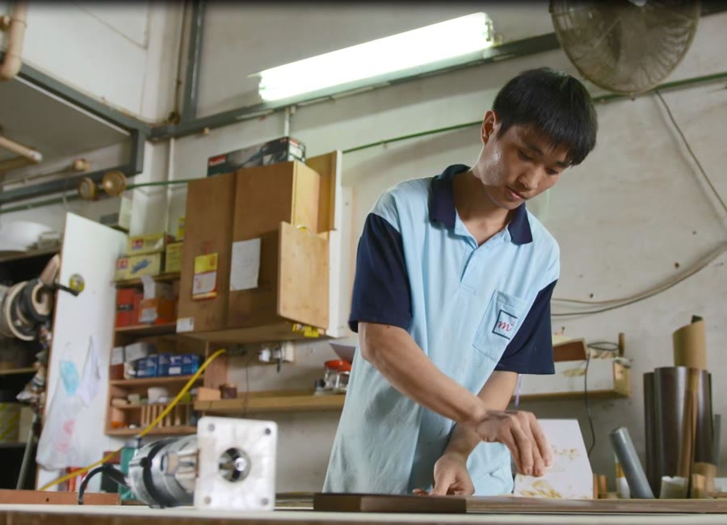
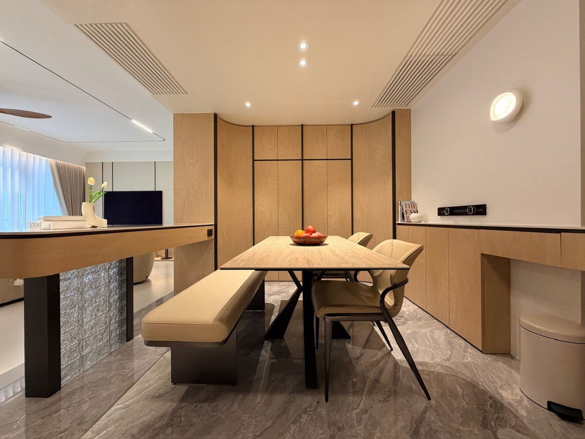

BlogCarpentry
Custom carpentry: what to check before you approve the drawings

Key points
- Carpentry is usually the largest single cost in a renovation. Check it on paper, before fabrication.
- Ask what each cabinet is made of, inside and out.
- Confirm the measurements against your appliances and your habits.
- Final site measurements should be taken after the tiling and flooring are done.
I grew up in my father’s carpentry workshop, and today I run it. Before I could read a floor plan, I knew what good joinery felt like. Most of the carpentry problems homeowners live with were decided on paper, weeks before anyone picked up a tool. So here are eight things to check while your cabinets are still a drawing.
1. The board behind the laminate
The carcass is the body of the cabinet. It is usually plywood, particleboard or MDF. Plywood generally holds screws well and copes better with moisture, which matters in kitchens and bathrooms. The others can be perfectly sound in dry areas and on tighter budgets. Ask which board is used, how thick it is, and what its formaldehyde emission grade is. Then have it written into the quotation.
2. The finish and the edges
Laminate, veneer and spray paint each wear differently. Ask to see and touch a sample. Then look at how the edges are finished, because edges are where water gets in and where laminate lifts first.
3. The hardware
Hinges and drawer runners do the daily work. Ask for the brand, whether they are soft-close, and what load the runners take on deep drawers. Hardware is the first thing to fail when it is chosen on price alone.
4. The inside, not just the front
An elevation drawing shows you doors. Ask for the internal layout as well: shelves, drawers, hanging height, and which shelves can be adjusted. Match it against what you own. This is the “O” in my HOME guide: storage first, style second.

5. Measurements against real things
Give your designer the model numbers of your fridge, washer, oven and robot vacuum. Check door swings, ventilation gaps and where the sockets sit inside each cabinet. Then check the walkway that is left when doors and drawers are open, not closed.
6. Spans and loads
This is the engineer in me. A long shelf loaded with books will sag over time unless it is thick enough or supported along its length. For any wall-hung cabinet, ask what the wall is made of and how the cabinet is fixed to it.
7. Access to what is behind
Pipes, valves, the electrical distribution board and air-con piping all need to be reached one day. Decide now where the access panels go. It is far cheaper than cutting into a finished cabinet later.
8. When the final measurement is taken
Final dimensions should be taken on site after tiling and flooring, and before fabrication. Tolerances can be very tight. In a flat I designed that was featured in SquareRooms, the curved cabinetry above the kitchen sink had to conceal the pipes with an allowance of only 5 to 10 mm.
Most carpentry problems are decided on paper, weeks before anyone picks up a tool.
What a good carpentry drawing shows
- Plan, elevation and section views, with dimensions
- Materials and finishes labelled on each part
- Hardware called out by type
- Positions of lighting, switches and wiring
- Appliance openings with the model noted
How this ties back to your quotation
Carpentry is normally priced per foot run, so everything above affects what that rate really buys. It is worth reading each quotation line by line before you compare two carpentry prices. It also helps to ask who is building your cabinets, and where.
Disclosure: I own M2D Carpentry, the workshop my father started. It fabricates the carpentry for M2D Interior Design projects.